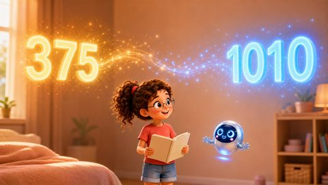
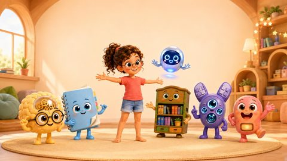
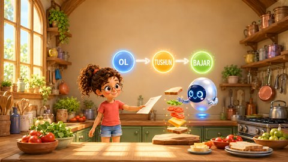
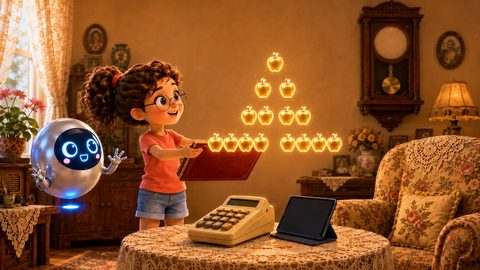

OʻZBEKCHA
Bilge va Yonga
Kompyuter qanday ishlashini 7 yosh va undan katta bolalarga tushuntiradigan rasmli kitoblar.
Sakkiz yoshli qiziquvchan qiz Bilge va kichkina robot Yonga bolalarni kompyuterning ichiga sayohatga olib boradi: chip qumdan qanday yasaladi, milliardlab mitti kalitlar qanday hisoblaydi, xotira maʼlumotni qanday saqlaydi. Turkum toʻrt jildda jamlangan 51 ta kitobdan iborat. Barcha kitoblar bepul va ochiq.
Bu sahifada birinchi jildning oʻzbekcha tarjimasi joylashgan. Kitoblarni yuklab olib, oilada, sinfda va kutubxonada bemalol oʻqishingiz mumkin.
Tarjima hali qoralama. Oʻzbekcha matnlar hozircha ona tili oʻzbek tili boʻlgan muharrir tekshiruvidan oʻtmagan. Xato yoki taklifingiz boʻlsa, bilgi@oguzergin.net manziliga yozing.
1-jild: Qumdan kompyutergacha
-
1.1c
Kalitlardan mantiqiy elementlarga
Tranzistor kalitlaridan mantiqiy elementlar yasash: VA, YOKI, EMAS
PDF yuklab olish -

-
1.2c
Dunyoning barcha harflari
Unicode va UTF-8: dunyodagi barcha belgilarga raqam berish va shu raqamni baytlarga joylash
PDF yuklab olish -

1.3Kompyuterning besh doʻsti
Kompyuterning besh asosiy qismi qahramonlar qiyofasida
PDF yuklab olish -

1.4Ol, tushun, bajar!
Buyruqni bajarish sikli (Ol, tushun, bajar / Fetch, Decode, Execute)
PDF yuklab olish -
1.5
Piyozning qatlamlari
Dasturiy taʼminot qatlamlari: apparat taʼminotidan ilovalargacha
PDF yuklab olish -

1.6Murning sehrli taqvimi
Mur qonuni: chipdagi tranzistorlar soni har ikki yilda ikki baravar koʻpayadi
PDF yuklab olish -
1.7
Ikki aka-uka: RISC va CISC
RISC va CISC: protsessor loyihalashning ikki xil yoʻli
PDF yuklab olish -
1.10
Kompyuter fikrlashni oʻrganmoqda
Sunʼiy intellekt tezlatkichlari (GPU, TPU, NPU)
PDF yuklab olish
Turkcha kitoblar
Turkumning barcha 51 ta turkcha kitobini saytimizda bepul oʻqishingiz va yuklab olishingiz mumkin. Audiokitoblar YouTubeʼda.
Litsenziya
Barcha kitoblar CC BY-NC-ND 4.0 litsenziyasi asosida ochiq. Manbani koʻrsatib, oʻzgartirmasdan va tijorat maqsadisiz tarqatish mumkin.
Muallif: Prof. Dr. Oğuz Ergin · bilgi@oguzergin.net